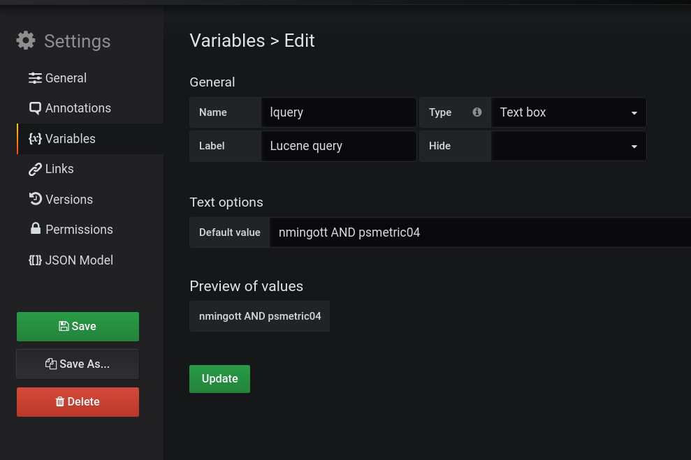

What problem does it solve ?
At SLAC we moved recently many server log files under Elasticsearch. It is now very easy and fast to do a text
search into all log files from the shell or from Kibana. Since our people user often Grafana to keep an eye
on the performance on the machines it was considered more pratical to the to be able to query Elasticsearch
from Grafana than from the default Kibana.
How does it look like ?
How does it run ?
How do I configure it ?
It is possible to use the plugin without defining a Grafana Template Variable,
- Download the software from GitHub.
- Place the file XXX under Grafana `data/plugins` directory
- Restart Grafana
- Add the ElastiGraf panel to one of your dashboards, possibly a new one.
How to add the Template Variable
The template variable permits to perform searches rapidly.
